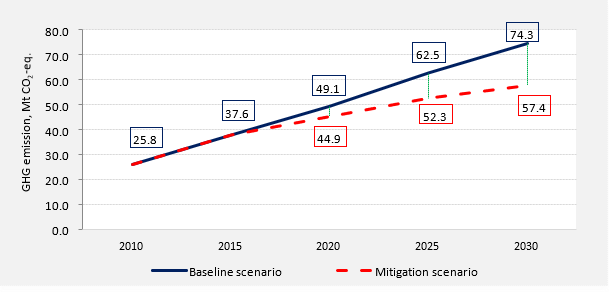

Mongolia has developed its Nationally Determined Contribution (NDC), which was approved by the Government Decree No.407 of November 2019, with the aim to contribute to the Paris Agreement. In the NDC, Mongolia has enhanced its mitigation efforts with policies and measures to be implemented in key economic and natural resource management sectors by 2030.
The mitigation target of Mongolia’s NDC will be a 22.7% reduction in total national greenhouse gas (GHG) emissions by 2030 (Figure 1), compared to the projected emissions under a business as usual scenario for 2010. In addition, if conditional mitigation measures such as the carbon capture and storage and waste-to-energy technology are implemented, then Mongolia could achieve a 27.2% reduction in total national GHG emissions. Along with that, actions and measures to remove GHG emissions by forest are determined, which set the total mitigation target of Mongolia as 44.9% of GHG emission reduction by 2030.

Figure 1. Comparison of BAU baseline GHG emission and mitigation scenarios (Mt СО2-eq.)
In the development of this NDC, Mongolia re-calculated the baseline emissions up to 2030, which are estimated to reach 74.3 Mt СО2-eq. in 2030 without LULUCF, compared to 2015’s INDC baseline of 51.3 Mt СО2-eq. The difference between these baseline emissions is primarily due to a variance in the methodology applied for base year emission (Revised 1996 IPCC GLs for INDC and 2006 IPCC GLs for NDC), as well as increasing the number of livestock and additional policy plans in the industrial processing sector, e.g. coal gasification project. This NDC now includes sectors that were not previously considered such as agriculture, waste and some industrial sectors. Under the new baseline, the mitigation target is a 22.7% reduction in total national GHG emissions. Under the 2015 baseline and INDC, the mitigation target was a 14% reduction in total national GHG emissions excluding land use, land use change and forestry (LULUCF) by 2030.
Adaptation needs and priorities are determined broadly in the NDC, considering the country specific vulnerabilities and climate risks for key socio-economic and natural resource management sectors. Moreover, there is an ongoing project (2018-2021) aimed to develop the national adaptation plan (NAP), and through this effort, the specific adaptation action will be identified. For the development of NAP, Mongolia is taking special consideration of the co-benefits between mitigation and adaptation actions, as well as on nature-based solutions in order to increase the efficiency and effectiveness of response measures to climate change.
By 2030, Mongolia intends to contribute to global efforts to mitigate GHG emissions by implementing the policies and measures listed in Annex 1, facilitating continued international support to complement domestic efforts. The initial estimate of financial needs for this NDC implementation is around US$11.5 billion, of which US$6.3 billion for mitigation, and US$5.2 billion for adaptation.
ANNEX 1: Mongolia’s NDC target by 2030
| A. Nationally Determined Contribution Target |
|---|
| Mongolia intends to achieve a target to mitigate its greenhouse gas emissions by 22.7 percent by 2030, compared to the business as usual scenario, excluding LULUCF. |
| B. Methodology and Assumptions | |
|---|---|
| Metric applied | IPCC Second Assessment Report (SAP), 100-year time horizon Global Warming Potential (GWP) |
| Methodologies for estimating GHG emissions |
LEAP (energy sector)
2006 IPCC Guidelines for national GHG inventories (non-energy sector) |
| Approach to accounting for agriculture, forestry and other land uses | 2006 IPCC Guidelines for national GHG inventories Multiple Forest Reference Level, 2018 |
| Implementation and integration of NDC into the national development policy and strategies |
For the achievement of NDC targets, it is imperative to develop a national roadmap, which reflects all actions and measures along with guidelines for sectors and integrate these actions into the Government action program and the national budget. The integration of NDC targets into the development of policy documents is beneficial to mobilize climate finance and explore international cooperation and support. One of the advantages of the NDC is that the principle targets presented in the NDC are in line with the national development policy documents such as the Vision-2050, which covers the development framework reflected in the following documents:
These national strategy and policy documents, as well as relevant legal instruments define stakeholders’ responsibilities and monitoring structure for implementation of the NDC. |
| C. Mitigation Targets | ||
|---|---|---|
| Base year | 2010 | |
| Base year emission (Mt СО2-eq.) | 25.8 | |
| Target year | 2030 | |
| Emission target by 2030 (Mt CO2-eq.) | 57.4 | |
| BAU emission in 2030 (Mt CO2-eq.) | 74.3 | |
| Emission reduction target | GHG emission reduction target (Mt СО2-eq.) | 16.9 |
| GHG EMISSION REDUCTION TARGET (%) | 22.7% | |
| Type | Policies and measures | |
| Coverage | Nationwide | |
| Gases covered |
Carbon dioxide (CO2) Methane (CH4) Nitrous oxide (N2O) Hydrofluorocarbons (HFCs) |
|
| Sectors |
Energy sector:
Non-energy sector:
|
|
| Conditional mitigation measures | ||
| GHG emission reduction from conditional measures, (Mt СО2-eq.) | 3.3 | |
| Total GHG emission reduction (including conditional measures), (%) | 27.2% | |
| GHG removals measures | ||
| GHG removals by forest, (Mt СО2-eq.) | -2.6 | |
| Total GHG emission reduction (including conditional measures and forest sink), (Mt СО2-eq.) | 22.8 | |
| TOTAL GHG EMISSION REDUCTION, (%)
(including conditional measures and forest sinks) |
44.9% | |
| C.1. Mitigation Actions and Measures | |
|---|---|
| Actions planned | GHG emissions reduction, Gg СО2-eq. |
| One. ENERGY SECTOR | |
| 1.1 Energy sector (production) | |
Use of renewable energy sources
Improved efficiency of energy production
|
8,340.5 |
| 1.2 Energy sector (consumption) | |
Transportation:
|
1,048.8 |
Construction:
|
830.1 |
| Industry:
Energy saving measures |
1,045.2 |
| Total GHG emission reduction from the energy sector | 11,264.6 |
| Two. NON-ENERGY SECTOR | |
Agriculture:
|
5,283.3 |
Industrial Processes and Product Use (IPPU):
|
234.1 |
Waste:
|
106.1 |
| Total GHG emission reduction from the non-energy sector | 5,623.5 |
| Total GHG emission reduction | 16,888.1 |
| D. Adaptation Targets | |
|---|---|
| Goals | Targets |
| Animal husbandry and pastureland | |
| Increase the productivity of the animal husbandry sector while ensuring the sustainable development of the sector and reducing the impacts and risks associated with climate change. |
|
| Arable farming | |
| Enable the sustainable supply of healthy food for the population, fodder for livestock, raw materials for the light and food industries through the agricultural products, by properly utilizing the positive impacts and reducing the adverse impacts of climate change in the agriculture sector. |
|
| Water resources | |
| Increase efficient water use methods, enhance the adaptive capacity of the water sector. |
|
| Forest resources | |
| Create forest ecosystems well adapted to climate change and enhance carbon sink by implementing sustainable forest management. |
|
| Biodiversity | |
| Enable adaptation opportunities and adaptive capacities for vulnerable biodiversity to climate change. |
|
| Natural disaster | |
| Build resilience to natural disasters by reducing the risks and adapting to impacts of climate and weather-related hazards and disasters. |
|
| Public health | |
| Strengthen healthcare services and capacities for early warning of potential health risks, and provision of proactive and response measures through the comprehensive study of climate change impacts on public health.; |
|
| Livelihood and social safeguard | |
| Establish a system providing social safeguard, insurance and prevention measures to reduce the vulnerability of social groups and build their resilience to climate change impacts by identifying groups vulnerable to climate change. |
|
| E. Needs for Support | |
|---|---|
| Financial Support | The financial needs for the NDC implementation are estimated initially as US$11.5 billion, of which US$6.3 billion for mitigation, and US$5.2 billion for adaptation. |
| Technology Transfer | In order to solve problems, the focus has to be made on soft approaches rather than solely relying on hard ones, including indigenous knowledge of local communities, combining traditional practices with modern know-hows. For determining the most suitable, efficient, and effective technologies, Mongolia needs to conduct the technology needs assessment. |
| Capacity Building and Knowledge Sharing | Building capacities to disseminate and transfer scientific information and knowledge and educating the public and various stakeholders on climate change, its impacts, as well as potential mitigation and adaptation measures are an essential precondition for the successful implementation of Mongolia’s NDC. |